- Je komt van MacDiveWelk bestand je exporteert en hoe je overstapt zonder iets kwijt te raken.
- Downloaden van een computerShearwater en andere Bluetooth-computers, of een kabel op de Mac.
- Garmin DescentImporteer .fit-bestanden van het horloge of uit Garmin Connect.
Werkt er iets niet? Zie Problemen oplossen. Thermocline is een logboek: het laat zien wat je duikcomputer heeft geregistreerd en berekent nooit decompressie.
De app installeren
Thermocline is alleen voor Apple-apparaten: iPhone, iPad, Mac en Apple Watch. Tijdens de bèta installeer je het via de TestFlight-app van Apple.
| Taak | iPhone en iPad | Mac |
|---|---|---|
| Doe mee aan de bèta | Doe mee aan de bèta: één link voor iPhone, iPad, Mac en Apple Watch. Open hem op elk apparaat en installeer vanuit TestFlight. De Apple Watch-app komt mee met de iPhone-app. Elk apparaat deelt via iCloud hetzelfde logboek. | |
| Vóór 18 november 2026 meegedaan aan de iPhone-bèta | Die app is verhuisd. Zie overstappen van de oude iPhone-app. | |
| Bijgewerkt blijven | Als TestFlight een nieuwe build aanbiedt, werk dan elk apparaat bij dat je gebruikt. Een oudere build stopt met het versturen van wijzigingen tot hij is bijgewerkt, en meldt dat. Er gaat niets verloren. | |
Eerste start en de rondleiding
Bij de eerste start vraagt de app je naam, je eenheden en waar je duiken vandaan komen. Eenheden worden metrisch opgeslagen; als je ze wijzigt, verandert alleen de weergave.
| Taak | iPhone en iPad | Mac |
|---|---|---|
| Instellingen | Het tabblad Profiel | Thermocline → Instellingen |
| De rondleiding | Profiel → Help → Toon de rondleiding | Help → Volg de rondleiding |
De rondleiding loopt elk scherm door met een voorbeeldlogboek, niet met het jouwe.
De schermafbeeldingen op deze pagina tonen het voorbeeldlogboek uit de rondleiding: de duiken en duikstekken zijn verzonnen. Tik op een afbeelding om hem op ware grootte te zien.

Je logboek meenemen
Thermocline leest MacDive (de map, XML of UDDF), een Shearwater Cloud-database, Garmin .fit-bestanden, UDDF uit elk logboek, en CSV. Je kiest welke duiken je toevoegt, en alles wat de app niet kan lezen, wordt opgesomd, nooit stilletjes weggelaten.
| Taak | iPhone en iPad | Mac |
|---|---|---|
| Een bestand importeren | Profiel → Je gegevens → Importeer een logboekbestand, en kies het dan in iCloud Drive of Bestanden. | De importopdracht in het menu Archief (⇧⌘I). |
| Garmin .fit-bestanden | Selecteer er meerdere tegelijk. | Selecteer er meerdere, of een hele map. |
| De map van MacDive, met foto's | Alleen op de Mac. Haal de foto's later over met de Mac-app. | Archief → Importeer uit MacDive… en kies de map van MacDive: duiken, duikfoto's en foto's van kaarten. De bestanden van MacDive worden niet gewijzigd. |
| De duiken kiezen | Vink de duiken uit die je niet wilt, en dan Importeer. | |
| Een import ongedaan maken | Het herstelpunt Vóór een import, bewaard vóór elke import van meer dan één duik. | Maak import ongedaan… in het importrapport, of hetzelfde herstelpunt. |
Als de import klaar is, toont een rapport hoeveel duiken zijn toegevoegd, welke items niet geïmporteerd zijn en waarom, en wat je moet controleren. Duiken waarvan het bestand geen gas bevatte, wachten in Te bevestigen.
Welk MacDive-bestand je moet gebruiken
MacDive kan je zijn XML, zijn UDDF of (op de Mac) zijn hele map geven. Ze bevatten niet hetzelfde:
| Wat erin zit | MacDive XML | MacDive UDDF | MacDive-map (Mac) |
|---|---|---|---|
| Duiken, duikstekken, buddy's, gassen | Ja | Ja | Ja |
| Flesinhouden | Ja | Nee: de inhouden daarin zijn geen waterinhouden, dus ze blijven leeg | Ja |
| Diepteprofielen | Elke duik | Elke duik | Alle behalve duiken die MacDive op iPhone of iPad heeft gedownload en versleuteld opslaat |
| NDL en ppO₂ van de computer tijdens de duik | Ja | Nee | Ja, behalve bij die versleutelde duiken |
| CNS van de computer | Ja | Nee | Ja |
| Uitrusting, tags en duiksoorten | Ja | Nee | Ja |
| Duikfoto's en foto's van kaarten | Nee | Nee | Ja |
| Taak | iPhone en iPad | Mac |
|---|---|---|
| Beste route | Exporteer je duiken uit MacDive als XML, bewaar het bestand in iCloud Drive en importeer het. | Importeer de map van MacDive, en daarna de XML eroverheen. De XML vult de profielen, NDL en ppO₂ van de versleutelde duiken aan. |
| De UDDF al geïmporteerd | Importeer ook de XML. Duiken die al in je logboek staan, worden herkend, niet opnieuw toegevoegd, en alleen wat ontbreekt wordt aangevuld, flesinhouden inbegrepen. Niets wat je hebt ingevoerd of gecorrigeerd, wordt gewijzigd. | |
Garmin Descent-horloges
Een Garmin Descent bewaart één .fit-bestand per duik. Er zijn twee manieren om ze te krijgen:
- Van het horloge: sluit het met de kabel aan op de Mac en open de map GARMIN → Activity. Op de Mac kun je de hele GARMIN-map importeren; bestanden die geen duiken zijn, zoals hardloopsessies en instellingen, worden overgeslagen.
- Uit Garmin Connect: open de duik en kies Exporteer origineel. Dat levert een .zip op: pak die eerst uit en importeer dan het .fit-bestand erin.
Posities komen van de gps van het horloge. Bij een driftduik bewaart het horloge de plek waar je bovenkwam als start; de import zoekt uit waar je echt te water ging, zodat de duik aan die duikstek wordt gekoppeld. Zet andere wrakken waar je langs kwam in de notities.

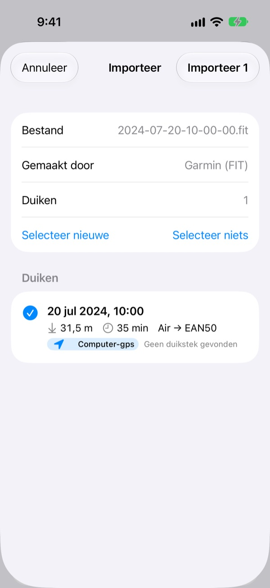
Duiken downloaden van je computer
Zet de duikcomputer eerst in zijn Bluetooth-modus. Op een Shearwater: Menu → Bluetooth. Hij blijft daar ongeveer twee minuten in. Alleen duiken die nieuwer zijn dan je laatste download, worden opgehaald.
| Taak | iPhone en iPad | Mac |
|---|---|---|
| Openen | Logboek → Download duiken | Archief → Download van duikcomputer… (⇧⌘D) |
| Verbinden | Bluetooth. Kies je computer onder In de buurt; de eerste keer typ je de pincode die op het scherm ervan staat. | Kies Bluetooth of USB-kabel. Voor een kabel kies je het model van je computer en de poort, en volg je Voordat je begint. |
| Afronden | Vink elke duik uit die je niet wilt, en dan Bewaar. Uitgevinkte duiken blijven op de computer en worden de volgende keer weer aangeboden. | Download. |
De vraag over de klok. Bij de eerste download van elke computer vraagt de app: Op welke zone staat de klok van de computer? De meeste computers registreren lokale tijd zonder tijdzone, zo blijven je duiktijden kloppen als je reist. Het antwoord wordt voor die computer onthouden.
Nadat je duiken hebt gekozen, kun je ze een voor een doorlopen om duikstek en gassen in te stellen, of kies Later afmaken: dan wachten ze in Te bevestigen.
Een duik verwijderd en wil je hem terug? Zet Download elke duik op de computer aan. Dat duurt langer; duiken die al in je logboek staan, worden overgeslagen.

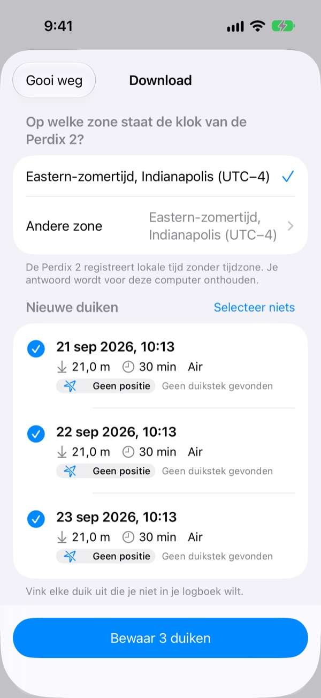
Shearwater Predator en Petrel 1
Deze gebruiken een oudere Bluetooth (Bluetooth Classic) die iPhones, iPads en Macs niet kunnen bereiken. Download ze met Shearwater Cloud op Windows of Android en importeer daarna de export of een UDDF-bestand in Thermocline.
Ondersteunde computers
Thermocline downloadt met libdivecomputer, de opensourcebibliotheek die veel logboeken delen. Die kent honderden modellen van de meeste merken. Om de jouwe te zien, open je het downloadscherm en kies je Ondersteunde computers; bij elke computer staat of hij werkt op iPhone en iPad of de Mac nodig heeft.
| Verbinding | Waar het werkt | Tot nu toe geprobeerd |
|---|---|---|
| Bluetooth LE | iPhone, iPad en Mac | Shearwater Perdix en Perdix 2. Andere modellen zouden moeten werken: laat het ons weten. |
| USB- of seriële kabel | Alleen Mac | Gebouwd, nog niet met echte hardware geprobeerd. |
| Bluetooth Classic (Predator, Petrel 1 en andere oudere modellen) | Niet op iPhone, iPad of Mac: importeer de duiken (hoe) | — |
| Garmin Descent (.fit-bestanden) | Importeren op iPhone, iPad en Mac (hoe) | Descent-duiken, ook driftduiken. |
Heb je een computer die wij nog niet hebben geprobeerd? Help ons hem te testen.
Duikstek en gassen bevestigen
Duiken die nog geen duikstek of bevestigde gassen hebben, wachten in Te bevestigen. Niets houdt het bewaren tegen; vul ze aan wanneer je wilt.
| Taak | iPhone en iPad | Mac |
|---|---|---|
| Ze vinden | Bovenaan Logboek, onder Te bevestigen. | Ga → Te bevestigen (⌘2) |
| Bevestigen | Open er een, dan Kies een duikstek en tik op Ja, deze gassen kloppen (of Corrigeer gas…). | De banner bij elke duik biedt Bevestig duikstek en gassen…, Kies duikstek… of Bevestig gassen… aan. |
Thermocline stelt de duikstek voor op basis van de positie van de duik: eerst je eigen duikstekken, dan de ingebouwde lijsten met meer dan 76.000 duikstekken en wrakken, die offline werken.

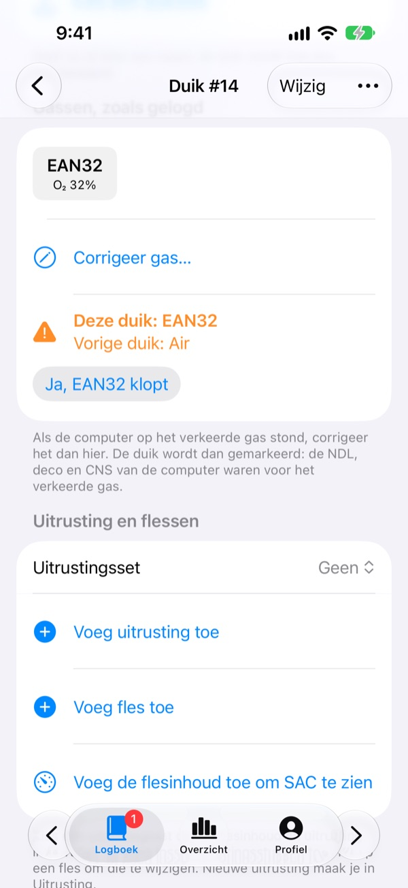
Een duik lezen
| Taak | iPhone en iPad | Mac |
|---|---|---|
| Elk moment aflezen | Sleep over de grafiek. | Wijs naar de grafiek. |
| Een duik met de hand loggen | Logboek → Log met de hand | ⌘N |
| Een duik verwijderen | Veeg er in het Logboek naar links over. Om er meerdere te verwijderen, tik je op Selecteer. | ⌘⌫, of Duik → Verwijder duik…. ⌘-klik om er meerdere te kiezen. |
- Verwijderen: eerst wordt een herstelpunt bewaard, dus een verwijderde duik kan terugkomen (zie Export, herstelpunten en wissen).
- Veiligheidswaarden staan in een vaste balk bovenaan elke duik, altijd op dezelfde plek.
- Het profiel: chips onder de grafiek tonen of verbergen Fles, ppO₂, NDL, SAC, Temp, CNS en Opstijging, als balken (Gestapeld) of in één weergave (Over elkaar). Alleen wat de duik heeft geregistreerd, krijgt een chip. De NDL is die van de computer en stopt tijdens deco, waar de rode band de stops toont. Op een smalle iPhone blijven de chips op één regel en scrollen ze zijwaarts. Probeer het op de startpagina.
- Rebreathers: bij elke computer of elk bestand dat ze registreert, toont de ppO₂-balk de setpoint met de ppO₂ ‘Voted’, de waarde die de computer uit de cellen kiest (en elke cel, waar geregistreerd), en de uitlezing geeft de setpoint op dat moment. Een wissel van de diluent naar een ander gas wordt aangeduid als bailout.
- Gasverbruik: tik of klik op Hoe? naast de SAC-waarde om elke invoer te zien: de fles, de waterinhoud, drukken, temperatuur en de reëel-gascorrectie.
- Wijzigen: wijzig elke duik. Een correctie bewaart de oorspronkelijke meting van de computer.
- Lood: de eerste tik op + zet Geen lood, voor een duik zonder lood. Tik vanaf daar op − om het te wissen.
- Links in notities: weblinks in de notities van een duik kun je aantikken of aanklikken. Als je klaar bent met typen, tik je op Gereed boven het toetsenbord: dan verschijnen de links, en een YouTube- of Vimeo-link krijgt onder de notities een knop Voeg … toe aan videolinks. Om weer in de notities te typen, kies je Wijzig notities.


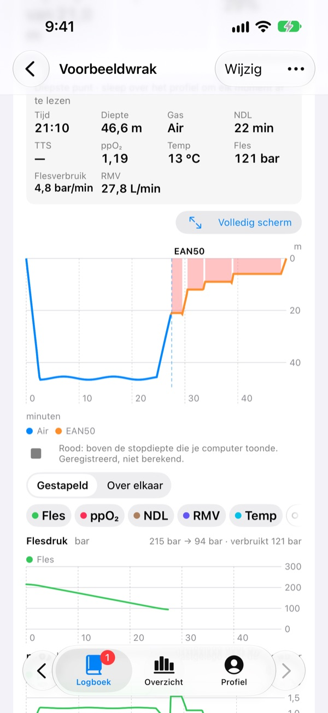


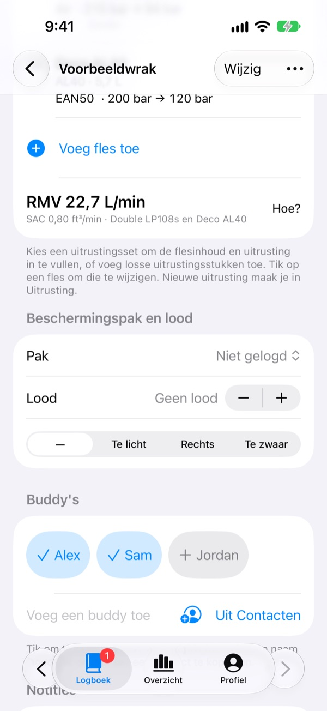

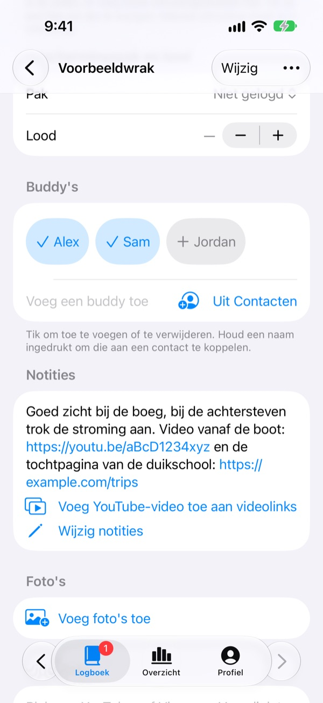

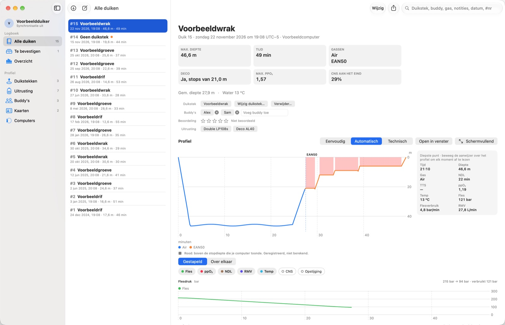
Duikstekken, posities en de Apple Watch
| Taak | iPhone en iPad | Mac |
|---|---|---|
| Een duikstek toevoegen | Profiel → Duikstekken, dan de knop om toe te voegen: Zoek of benoem een duikstek of Markeer plek hier (gps). | Ga → Duikstekken (⌘4), dan Voeg duikstek toe… |
| Alle duikstekken in de lijsten zien | Profiel → Duikstekken → Kaart, dan de wereldbolknop, of zoom helemaal uit. Wrakken zijn oranje, riffen en duikstekken blauw, je eigen duikstekken rode vlaggen. | Duikstekken, dan Toon wereldbol in de knoppenbalk, of zoom helemaal uit. |
| Een positie vinden | Een duikstek zonder positie biedt Zoek positie aan: controleer de suggestie op de kaart, typ coördinaten in of zet een speld. | Zoek posities… loopt elke duikstek zonder positie een voor een door. |
Apple Watch: markeer aan de oppervlakte een plek en die wacht op je iPhone in Te bevestigen. Zie Apple Watch.
Posities van duikstekken zijn om te loggen, niet voor navigatie.

Apple Watch
De Watch-app doet één ding: hij markeert waar je bent aan de oppervlakte, zodat de duikstek van een duik makkelijk te loggen is. Hij registreert geen duiken; die komen van je duikcomputer. Hij heeft watchOS 11 of nieuwer nodig en een iPhone met Thermocline.
| Taak | Apple Watch | iPhone |
|---|---|---|
| Installeren | Hij komt mee met de iPhone-app. Staat hij niet op het horloge, open dan de Watch-app op je iPhone, zoek Thermocline onder Beschikbare apps en tik op Installeer. Sta de eerste keer locatie toe voor Thermocline op het horloge. | |
| Een plek markeren | Open Thermocline aan de oppervlakte, boven de duikstek. Wacht op Goede fix en tik dan op Markeer plek. Het horloge tikt op je pols als de plek is bewaard. | De plek komt vanzelf binnen. Is de iPhone buiten bereik, dan wordt hij verstuurd zodra ze weer bij elkaar zijn. |
| Een naam geven | Optioneel. Tik na het markeren, of later in Markeringen, op Voeg een naam toe en spreek, krabbel of typ hem, bijvoorbeeld ‘boeg van het wrak’. Hij wordt bewaard als je klaar bent. | De naam wordt aangeboden als naam van de nieuwe duikstek. Je kunt hem gebruiken of een andere duikstek kiezen. |
| Bevestigen | Op het horloge hoef je niets te doen. | Logboek → Te bevestigen. De iPhone zoekt de plek op als hij online is, stelt de dichtstbijzijnde bekende duikstek voor en toont de duik waar hij het waarschijnlijkst bij hoort. Bevestig of verwerp hem. |
| Controleren of hij is verstuurd | Markeringen toont elke plek met Naar iPhone gestuurd of Wacht op versturen naar iPhone, en een kaart. Een plek verdwijnt van het horloge zodra hij op de iPhone is bevestigd of verworpen. | Eenmaal bevestigd, wordt de duikstek net als elke andere naar je andere apparaten gesynchroniseerd. |

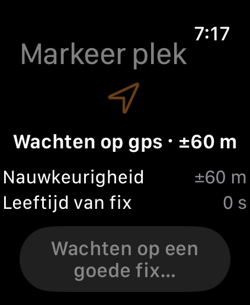

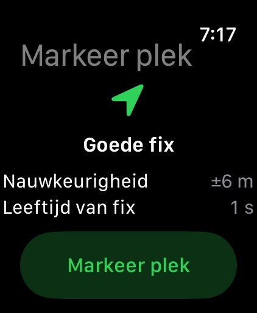

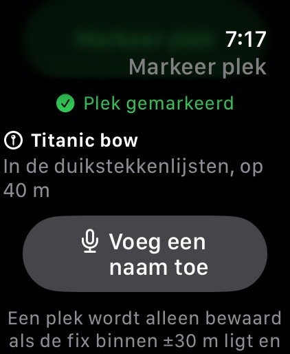

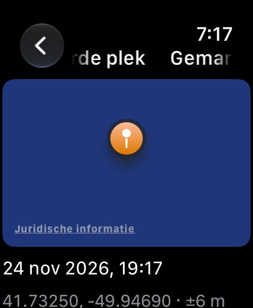
Het horloge bewaart een plek alleen uit een fix binnen ±30 m die minder dan 30 seconden oud is, en het negeert een oude positie uit de cache. Markeer aan de oppervlakte, niet onder water.
Posities van duikstekken zijn om te loggen, niet voor navigatie.
Uitrusting en flessen
| Taak | iPhone en iPad | Mac |
|---|---|---|
| Uitrusting openen | Profiel → Uitrusting | Ga → Uitrusting |
- Bij een fles opent Model de flessencatalogus: zoek op merk of model (bijvoorbeeld ‘PST LP104’) om de gepubliceerde maten in te vullen, of typ je eigen waarden.
- Vink Dubbelset (gemanifold) aan voor een dubbelset.
- Een stalen fles met een ingeslagen +: zet Plusmarkering aan zolang de laatste hydrotest de + heeft behouden. Hij wordt dan bijvoorbeeld getoond als 2400+. Deze schakelaar verschijnt als flesinhouden in kubieke voet worden getoond.
- De flessen van elke duik staan in het gasgedeelte van de duik (Voeg fles toe, Uitrustingsset).
Duiken samenvoegen en aaneenvoegen
- Voeg samen is voor één duik die door twee computers is geregistreerd. Beide registraties blijven bewaard en je kunt er in de grafiek tussen wisselen.
- Voeg aaneen is voor één duik die door kort bovenkomen in tweeën is gesplitst.
- Thermocline doet nooit een van beide uit zichzelf. Als het een waarschijnlijk paar ziet, biedt een banner bovenaan het logboek aan ze te bekijken.
| Taak | iPhone en iPad | Mac |
|---|---|---|
| Zelf doen | Tik op Selecteer, kies twee duiken, dan Voeg samen of Voeg aaneen. | Selecteer twee duiken en klik met de rechtermuisknop: Voeg deze duiken samen… of Voeg deze duiken aaneen… |
| Je bedacht je | Herstel meteen, of op elk moment Scheid deze duiken bij de duik. | |
Foto's en videolinks
- Voeg foto's toe bij een duik kopieert ze uit je bibliotheek naar het logboek.
- Om iCloud-ruimte te besparen, zet je op elk apparaat Synchronisatie → Bespaar iCloud-opslag voor duikfoto's aan. Foto's worden dan gekoppeld aan iCloud-foto's in plaats van gekopieerd, en video's uit je bibliotheek kunnen worden toegevoegd. Thermocline vraagt alleen om toegang tot Foto's als je dit aanzet.
- Videolinks: plak een YouTube- of Vimeo-link onder de foto's van een duik. Alleen de link wordt bewaard. Een link die al in de notities staat, kun je daar vandaan toevoegen (zie Een duik lezen).
- Dezelfde video bij meerdere duiken: selecteer de duiken (tik op de iPhone eerst op Selecteer), kies Wijzig … duiken… en voeg de link toe onder Videolinks. Hij wordt aan elke geselecteerde duik toegevoegd, en links die ze al hebben, blijven bewaard.
Overzicht en gasverbruik
Het tabblad Overzicht (Overzicht in de navigatiekolom van de Mac) telt je logboek: duiken per jaar en per maand, diepten, gassen, records, waar je duikt, en je meest gebruikte duikstek en buddy. Kies bovenaan een periode, zoals één jaar, en tik op een getal of balk om de duiken erachter te zien.
- Gasverbruik toont je SAC en RMV over elke duik in de periode die een flesinhoud en begin- en einddruk heeft, gewogen naar tijd en diepte. Tik erop om te zien welke duiken zijn meegeteld.
- Sommige geïmporteerde duiken hebben geen flesinhoud, dus Gasverbruik kan eerst leeg zijn (zie Welk MacDive-bestand je moet gebruiken). Stel de flessen van je duiken in, in Uitrusting of bij elke duik, en het vult zich.

Synchroniseer met iCloud
| Taak | iPhone en iPad | Mac |
|---|---|---|
| Synchronisatie aanzetten | Profiel → Synchronisatie | Thermocline → Instellingen → Synchronisatie |
Elk apparaat dat met hetzelfde Apple Account is ingelogd, deelt dan één logboek, opgeslagen in je eigen privé-iCloud. Wijzigingen die offline zijn gemaakt, wachten op het apparaat en worden verstuurd als het weer online is.
Het onderdeel Synchronisatie toont de status, alles wat Wacht op verzenden, en of dit apparaat en je andere overeenkomen. Synchroniseer nu controleert meteen.

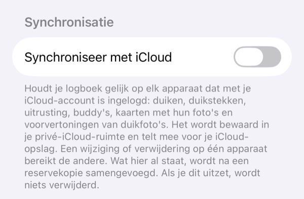
Export, herstelpunten en wissen
| Taak | iPhone en iPad | Mac |
|---|---|---|
| Exporteren | Profiel → Je gegevens | Het menu Archief |
| Herstelpunten | Profiel → Je gegevens → Herstelpunten | Instellingen → Je gegevens → Herstelpunten |
- Exporteren: UDDF is de volledige export en je uitweg naar elk logboek. Ook beschikbaar: een spreadsheet (CSV), MacDive XML, bladwijzers voor grotsurvey (CSV) en een ervaringsoverzicht (tekst) voor cursusvereisten.
- Herstelpunten: er wordt er een bewaard vóór het aanzetten van synchronisatie, vóór een grote import, een samenvoeging, een aaneenvoeging, het wissen van het logboek en voordat er iets wordt verwijderd. Bij herstellen wordt je huidige logboek eerst als herstelpunt bewaard, zodat je het ongedaan kunt maken.
- Wissen: Wis logboek… biedt aan eerst te exporteren. Met synchronisatie aan volgen je andere apparaten.

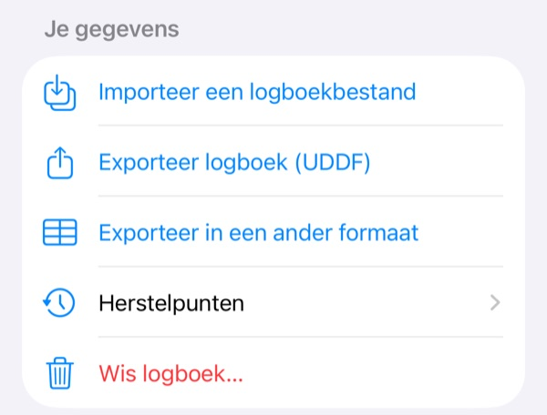
Toegankelijkheid
Thermocline volgt de toegankelijkheidsinstellingen van je apparaat.
- VoiceOver leest elke balk in het Overzicht voor als één onderdeel, met het aantal. Open hem om de duiken te zien.
- Grotere tekst: het Overzicht loopt door op de volgende regel in plaats van af te breken, tot de grootste formaten.
- Differentieer zonder kleur: wrakken zijn ruiten op de kaart, niet alleen oranje.
- Verminder beweging: de kaart springt naar een duikplek in plaats van ernaartoe te vliegen, en meldingen faden in in plaats van in te schuiven.
Kom je er niet uit?
Zie Problemen oplossen, of stuur feedback vanuit TestFlight of naar brian@616labs.net.